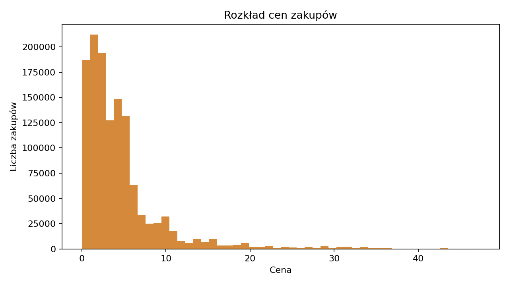

EDA i dashboard opisowy
Cel rozdziału
Ten rozdział odpowiada części EDA z klasycznego notebooka analitycznego. Jego zadaniem jest szybkie sprawdzenie, czy dane są kompletne, sensowne biznesowo i gotowe do dalszych analiz.
Quarto korzysta tutaj z lekkich artefaktów policzonych lokalnie na pełnym zbiorze kosmetycznym: 20 692 840 rekordów źródłowych. Streamlit pozostaje wersją demonstracyjną, w której użytkownik wgrywa wyselekcjonowany mały plik CSV.
Co ustaliliśmy w EDA
Najważniejsze ustalenia z pełnego zbioru kosmetycznego:
- po czyszczeniu technicznym zostaje 20,69 mln poprawnych zdarzeń,
- zdarzenia
purchasestanowią 6,22% wszystkich eventów, - zakup zrobiło 110,5 tys. z 1,64 mln użytkowników,
- braki w
category_codeograniczają interpretację kategorii tekstowej, - ceny zakupowe mają rozkład prawoskośny, dlatego w modelach stosowane jest logarytmowanie cech dodatnich.
Liczba unikalnych wartości
Tak jak w notebooku, pierwszym krokiem jest sprawdzenie, jak bardzo rozdrobnione są identyfikatory produktów, kategorii, marek, klientów i sesji. Sama liczba produktów nie wystarcza do tezy o długim ogonie, ale pokazuje, że dalsza analiza powinna uwzględniać koncentrację sprzedaży i popularności.
| Kolumna | Liczba unikalnych wartości |
|---|---|
| event_type | 4 |
| product_id | 54571 |
| category_id | 525 |
| brand | 273 |
| user_id | 1639358 |
| user_session | 4535941 |
Metryki po czyszczeniu
Poniższe metryki pochodzą z pełnego zbioru kosmetycznego po czyszczeniu technicznym:
| Metryka | Wartość |
|---|---|
| Liczba pozycji zakupowych po czyszczeniu | 1 286 881 |
| Przychód po czyszczeniu | 6351830.29 |
| Średnia wartość pozycji zakupowej | 4.94 |
| Klienci z zakupem | 110 518 |
| Sesje zakupowe | 155 617 |
| Sesje z marką w zakupie | 137 908 |
Lejek od zdarzeń do przychodu
Pełny zbiór zaczyna się od 20,7 mln zdarzeń i 1,64 mln użytkowników. Po odfiltrowaniu realnych zakupów zostaje 1,29 mln pozycji zakupowych, czyli 6,22% wszystkich zdarzeń. Zakupu dokonało 110,5 tys. klientów, czyli 6,74% wszystkich użytkowników.
To zmienia sposób czytania dashboardu: nie analizujemy całej aktywności jako wartości biznesowej. Wyświetlenia i koszyki mówią o zainteresowaniu, ale przychód powstaje dopiero w małej grupie użytkowników, którzy kupują. Klient kupujący miał średnio 11,64 pozycji zakupowych i wygenerował 57,47 jednostek wartości sprzedaży.

Produkty i marki
Najważniejsze marki według przychodu:
| Marka | Przychód |
|---|---|
| runail | 343433.19 |
| grattol | 266295.94 |
| irisk | 223903.38 |
| uno | 190719.46 |
| strong | 151941.8 |
| masura | 139764.86 |
| jessnail | 134775.04 |
| ingarden | 124606.04 |
| estel | 121788.76 |
| cnd | 106327.8 |
Tabela marek pokazuje, że ranking wolumenu i ranking wartości nie muszą być takie same. runail łączy największą liczbę zakupów z najwyższą wartością sprzedaży (111 408 zakupów i 343 433,19 wartości sprzedaży), natomiast strong ma niski wolumen, ale wysoką wartość przychodu (850 zakupów i 151 941,80 wartości sprzedaży). Top marki wolumenowe to runail, irisk, masura, grattol i bpw_style, a top marki przychodowe to runail, grattol, irisk, uno i strong. To sugeruje dwa różne zastosowania: marki wolumenowe są naturalnym punktem startu dla merchandisingu, a marki wysokowartościowe wymagają osobnej oceny marży i kosztu promocji.
Najważniejsze produkty według przychodu:
| Produkt | Przychód |
|---|---|
| 5560754 | 71726.72 |
| 5809910 | 39202.47 |
| 5751422 | 38229.81 |
| 5751383 | 30138.29 |
| 5850281 | 29283.62 |
| 5849033 | 28416.78 |
| 5792800 | 27764.36 |
| 5877454 | 26832.09 |
| 5560756 | 24865.44 |
| 89343 | 24149.61 |
Interpretując ranking produktów i marek trzeba pamiętać, że brand ma istotne braki, a category_code jest prawie puste. Dlatego EDA dobrze opisuje widoczną część katalogu, ale nie wystarcza do pełnej segmentacji kategorii bez dodatkowego wzbogacenia danych.
Rozkład cen

Rozkład cen jest skośny: średnia cena pozycji zakupowej wynosi 4,93, a mediana 3,00. Dla wszystkich eventów P99 ceny wynosi 95,08 przy medianie 4,05, dlatego w częściach segmentacyjnych stosowane jest logarytmowanie cech dodatnich przed standaryzacją i klasteryzacją.
Interpretacja
EDA potwierdza, że dalsze analizy powinny traktować aktywność i wartość jako dwa różne zjawiska. Większość użytkowników nie kupuje, a sprzedaż powstaje w wąskiej grupie klientów. To uzasadnia osobne ścieżki: dashboard sprzedażowy, RFM dla kupujących i segmentację zachowań dla całej populacji użytkowników.